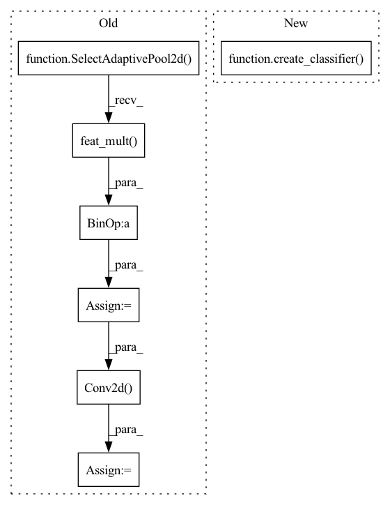

Pattern ID :1759
Before Change
self.features = nn.Sequential(blocks)
// Using 1x1 conv for the FC layer to allow the extra pooling scheme
self.global_pool = SelectAdaptivePool2d(pool_type=global_pool)
num_features = self.num_features * self.global_pool.feat_mult()
self.classifier = nn.Conv2d( num_features, num_classes, kernel_size=1, bias=True)
def get_classifier(self):
return self.classifier
After Change
self.features = nn.Sequential(blocks)
// Using 1x1 conv for the FC layer to allow the extra pooling scheme
self.global_pool, self.classifier = create_classifier(
self.num_features, self.num_classes, pool_type=global_pool, use_conv=True)
def get_classifier(self):
return self.classifier
In pattern: SUPERPATTERN
Frequency: 3
Non-data size: 7
Instances Fragment ID: 8207141
Project Name: feng-lab/pytorch-image-models
Commit Name: b1f1a54de92ef8629eb486f2b14035a8cb314766
Time: 2020-08-03
Author: rwightman@gmail.com
File Name: timm/models/dpn.py
M Class Name: DPN
N Class Name: DPN
M Method Name: __init__(14)
N Method Name: __init__(14)
M Parent Class: nn.Module
N Parent Class: nn.Module
M File Name: timm/models/dpn.py
N File Name: timm/models/dpn.py
M Start Line: 236
M End Line: 242
N Start Line: 176
N End Line: 241
Before Change
def reset_classifier(self, num_classes, global_pool="avg"):
self.num_classes = num_classes
self.global_pool = SelectAdaptivePool2d(pool_type=global_pool)
if num_classes:
num_features = self.num_features * self.global_pool.feat_mult()
self.fc = nn.Conv2d( num_features, num_classes, kernel_size=1, bias=True)
else:
self.fc = nn.Identity()
def forward_features(self, x):After Change
def reset_classifier(self, num_classes, global_pool="avg"):
self.num_classes = num_classes
self.global_pool, self.fc = create_classifier(
self.num_features, self.num_classes, pool_type=global_pool, use_conv=True)
def forward_features(self, x):
x = self.base_layer(x)
x = self.level0(x) Fragment ID: 8207143
Project Name: feng-lab/pytorch-image-models
Commit Name: b1f1a54de92ef8629eb486f2b14035a8cb314766
Time: 2020-08-03
Author: rwightman@gmail.com
File Name: timm/models/dla.py
M Class Name: DLA
N Class Name: DLA
M Method Name: reset_classifier(3)
N Method Name: reset_classifier(3)
M Parent Class: nn.Module
N Parent Class: nn.Module
M File Name: timm/models/dla.py
N File Name: timm/models/dla.py
M Start Line: 316
M End Line: 323
N Start Line: 314
N End Line: 316
Before Change
def reset_classifier(self, num_classes, global_pool="avg"):
self.num_classes = num_classes
self.global_pool = SelectAdaptivePool2d(pool_type=global_pool)
if num_classes:
num_features = self.num_features * self.global_pool.feat_mult()
self.classifier = nn.Conv2d( num_features, num_classes, kernel_size=1, bias=True)
else:
self.classifier = nn.Identity()
def forward_features(self, x):After Change
def reset_classifier(self, num_classes, global_pool="avg"):
self.num_classes = num_classes
self.global_pool, self.classifier = create_classifier(
self.num_features, self.num_classes, pool_type=global_pool, use_conv=True)
def forward_features(self, x):
return self.features(x)
Fragment ID: 8207142
Project Name: feng-lab/pytorch-image-models
Commit Name: b1f1a54de92ef8629eb486f2b14035a8cb314766
Time: 2020-08-03
Author: rwightman@gmail.com
File Name: timm/models/dpn.py
M Class Name: DPN
N Class Name: DPN
M Method Name: reset_classifier(3)
N Method Name: reset_classifier(3)
M Parent Class: nn.Module
N Parent Class: nn.Module
M File Name: timm/models/dpn.py
N File Name: timm/models/dpn.py
M Start Line: 249
M End Line: 256
N Start Line: 247
N End Line: 249